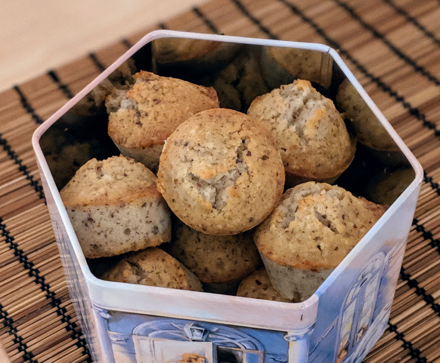

Gâteau aux noisettes

Version "cupcakes", voir remarque ci-dessous.
Pour 6 parts :
- 100g de beurre
- 4 blancs d'œufs
- 180g de sucre semoule
- 100g de farine
- 125g de noisettes en poudre
- Un sachet de sucre vanillé
- Faire fondre le beurre, et pendant ce temps, battre énergiquement les blancs et le sucre, pour obtenir un blanc crémeux. Faire préchauffer le four à 200° (thermostat 6-7).
- Ajouter la farine au fur et à mesure pour bien qu'elle s'incorpore, puis rajouter la poudre de noisettes et le sucre vanillé.
- Ajouter le beurre fondu et refroidi, remélanger, verser dans un plat à tarte beurré.
- Mettre 30 minutes au four, jusqu'à ce qu'une pique plantée dans le gâteau ressorte sèche. Savourer tiède ou refroidi.
Remarque : on peut aussi verser dans des moules à muffins beurrés pour faire des gâteaux individuels, comme sur la photo. Dans ce cas, le temps de cuisson est plutôt de 15-20 minutes.